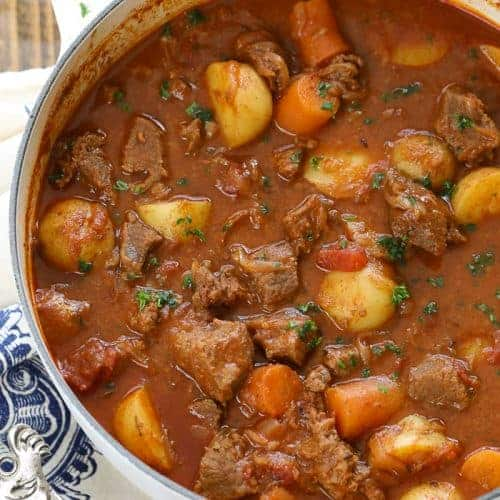

Goulash

Description
A verry tasty dish from Hungary, made with beef and potatoes and a lot of paprika
Ingredients
- 1 kg of beef meat
- 2 kg of potatoes
- 1 kg of carots
- 1 big salary
- 2 onions
- 100 grammes of paprika
- 20 grames of cummin seeds
- 300 grammes of peeled tomatoes
- 200 ml of sunflower oil
- 300 grammes of csipete
- salt and pepper by taste
Steps
- Fry the beef meat cut in peaces in the sun flower oil
- Add the paprika and cumin seeds
- Put the onions cut in small cubes
- Put watter until covered and boil for about 3 hours, or until the meat is almost cooked. Complete with watter when needed.
- Put in the peeled tomatoes, and seazon with salt and pepper
- Put the potatoes cu in bitesized peaces
- Put in the carrots cut in bitesized pieces
- Put in the salary cut in big chunks
- Boil for 30 minutes
- Put in the csipete and boil for 5 minutes